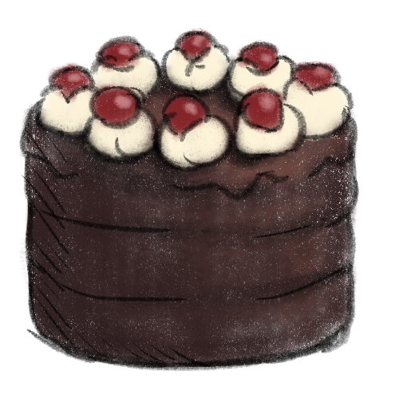

Back to the main page
Black Forest Cake

"It's 2007 again, yay."
I couldn't bring myself to add the actual recipe from the game, so here's my extremely cheap, knock-off (and even edible) version of it.
Ingredients:
- 3 prepackaged chocolate cake layers
- Heavy cream for crumb coating and filling
- Cherry confiture
- Whipped cream for decoration
- 8 candied cherries
- Dark chocolate
- Some cherry liqueur for flavor~
Steps:
- Place the confiture on the first cake layer, then spread the heavy cream across it.
- Put the second layer on top of the first one and sprinkle some liqueur over it. Add the confiture and the heavy cream again.
- Put the last layer on top and crumb coat the cake with the heavy cream.
- Grate the chocolate and cover the cake with it.
- For decoration, make 8 roses with whipped cream with candied cherries on top.